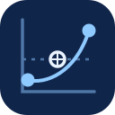

Personal icon studies
Yan-Ke Chen · 11 candidates · Large, 32 px and 16 px
01
Y / Jacobi
纯几何 Y 形三体顶点，简洁、直接。
3216
02
Resonance orbit
Y 顶点与未闭合轨道，强调共振与动态。
3216
03
YK monogram
Y 与 K 共用顶点，K 使用浅色独立笔画，外侧以 C 形轨道补齐三个字母。
3216
04
Spectral Y
三条能级谱线与 Y 形三体结构叠加。
3216
05
Pole map
复平面、阈值虚线和三个极点，偏研究方法。

3216
06
C triad
三个粒子沿 C 形轨迹排列，呼应 Chen。
3216
07
K / Complex scaling
坐标轴与两条连续谱射线构成 K，共振极点置于其间。
3216
08
Oblique frame
整体坐标框架倾斜，射线长度和角度不再对称。
3216
09
Open axis
断开坐标轴，以留白和偏心共振点减轻僵硬感。
3216
10
Riemann sheets
增加一条平行能层射线，表现不同黎曼面之间的联系。
3216
11
Pole orbit
将装饰重心移到共振极点，以倾斜小轨道形成视觉焦点。
3216